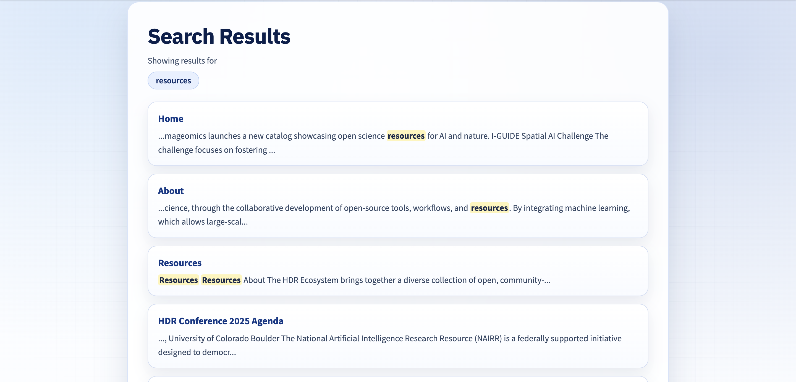

NSF HDR Platform Redesign
Public systems don’t usually fail all at once. They slowly become harder to use until people stop trusting them.
I worked on this platform through Imageomics. Imageomics owned and maintained the site, and it served the full NSF HDR community across five research institutes while remaining open to the public.
Researchers, faculty, staff, and external visitors used the site to find shared resources, understand programs, and submit requests. Over time, the structure stopped holding up.
I migrated the platform from Google Sites to GitHub and rebuilt it using HTML, CSS, and JavaScript. The project was not just about making the site look better. It was about making it easier to use, easier to update, and less confusing for the people relying on it.
The production code now spans 30+ HTML pages with shared frontend architecture for institutes, resources, events, publications, and ML challenge workflows.
Context
Imageomics hosted and maintained a public-facing platform on behalf of the NSF HDR program.
The site needed to work for multiple audiences at once: internal teams across five institutes and members of the public looking for clear, reliable information.
During 2025-2026, NSF-related funding uncertainty and program disruptions increased the need for a stable public platform to preserve resources, institutional history, and cross-institute access.
The redesign required migrating all content from the legacy site while keeping accuracy, accessibility, and formal approval intact.
Problem
The core challenge wasn’t adding features. It was helping a growing platform stay clear and usable as needs expanded over time.
- Navigation had grown around program history more than user tasks
- Related content ended up spread across multiple sections
- Approval steps were not always easy to follow
- Public and internal information needed clearer separation
Users
- Researchers across five institutes using shared resources
- Faculty tracking approvals and timelines
- Administrative staff coordinating requests and documentation
- Public visitors learning about the program and its work
My role
Scope & ownership: I worked on frontend implementation, the Google Sites-to-GitHub migration, information structure, and publishing approvals. I collaborated with a student designer on visual direction.
- Built and maintained shared header/footer components with dynamic path handling
- Migrated and QAed legacy Google Sites content into GitHub-hosted pages
- Implemented client-side search indexing across site pages and dynamic content
- Built filter and pagination logic for events, news, and challenge views
- Added redirect pages to preserve legacy URLs and reduce broken links after launch
Migration often meant reconciling outdated or conflicting content with stakeholders instead of just copying pages over.
Constraints
- One platform serving public and internal audiences
- Accuracy and approval mattered more than speed
- Needed long-term continuity as funding and ownership changed
- Limited engineering support
- The site needed to survive long-term handoff
Approach
- Listed common tasks by audience
- Separated public information from internal workflows
- Grouped content around intent, not initiatives
- Shipped in small steps to avoid disruption
Design decisions
This was not just visual cleanup. We also reworked how people moved through the site, how content was grouped, and how quickly users could find what they needed.
- Designed a clearer top-level information hierarchy around user intent
- Standardized card, section, and CTA patterns so pages felt consistent
- Created a reusable visual language across institutes, events, and resources
- Improved readability with cleaner spacing, clearer headings, and better content chunking
- Made navigation behavior predictable across desktop and mobile states
- Designed for accessibility basics in production: meaningful alt text, labels, and keyboard-friendly controls
I helped implement these design choices on the frontend and worked with a student designer on visual direction and layout decisions.
Structure before and after
The original navigation grew around individual programs and initiatives. As more work was added, top-level options multiplied and similar content ended up split across sections.
I reorganized the navigation around what people actually came to do. Related work was grouped under shared categories, and program-specific content moved one level down. This reduced top-level choices and made the site easier to scan without losing depth.


Implementation
- Vanilla HTML, CSS, and JavaScript across 30+ pages
- Component loading system for consistent header/footer across directory depths
- Client-side search indexing with page crawling and query normalization
- Data-driven events/news rendering with responsive mobile/desktop pagination
- Separate carousel logic for home and conference pages, including controls and autoplay
- Challenge status logic with deadline-based badges, countdowns, and filters
- Legacy redirect pages to preserve high-traffic links after migration
Evidence in the work
A lot of this project was infrastructure work, so the strongest proof is not one flashy screen. It is the amount of messy work the new system could handle without becoming harder to maintain.
One example of this was the site search. Instead of making users click through page after page, I added client-side search so people could find resource-related content across different parts of the site more quickly.

I also rebuilt shared page structure so updates did not have to be repeated manually everywhere, and I cleaned up migrated content instead of moving old pages over as-is.
Impact
- Unified five-institute content into a single public reference point
- Preserved access to key resources during a funding transition period
- Made updates easier by centralizing shared navigation and footer components
- Reduced migration risk by keeping legacy links alive through explicit redirects
- Improved discoverability with searchable pages and filterable event/news views
Tradeoffs
- We focused more on getting the content and structure right than on adding extra features
- Manual review took more time, but it helped avoid publishing pages with outdated or incorrect information
- Some parts of the build stayed simple on purpose so the site would be easier to update and hand off later
What could’ve gone wrong
- Moving over outdated content without catching it first
- Breaking links or page paths during the migration to GitHub
- Publishing updates before content had been fully checked
- Making the structure look cleaner without actually making things easier to find
Approval flow
- The designer shared the page or update that needed to be built
- I coded the changes and pushed them to GitHub
- Content and accuracy were checked before release
- Once approved, the update was published to the main site
What I’d do next
The main build is complete, so the work now is mostly maintenance. Any future changes would likely be smaller content updates, routine upkeep, and improvements based on how people use the site over time.
Reflection
- Public-facing systems raise the stakes
- Migration is where trust is earned
- Structure matters more than features